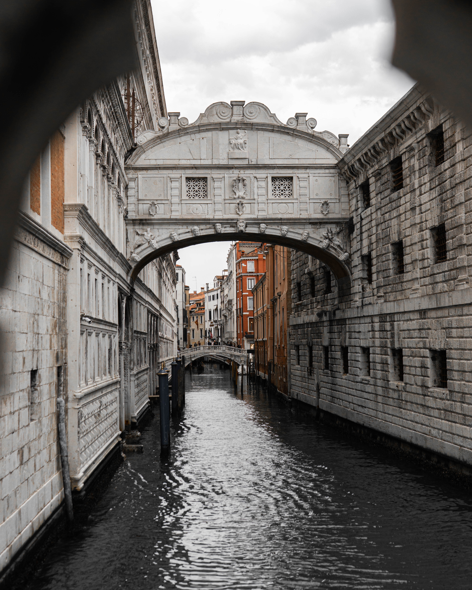
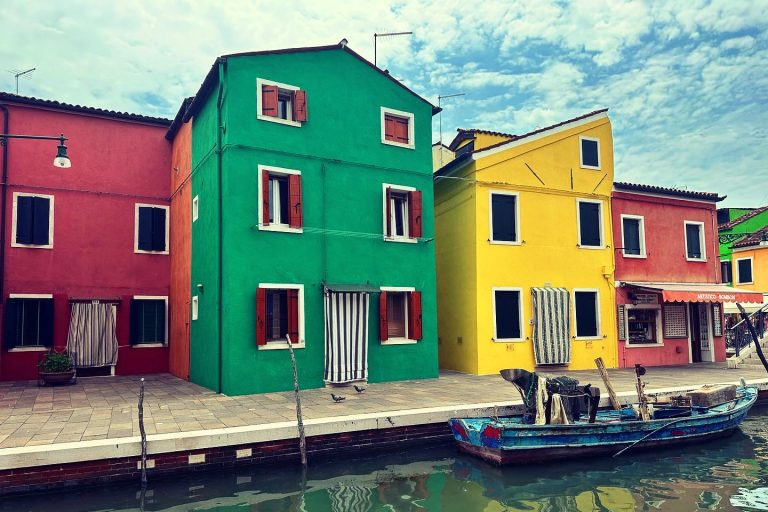
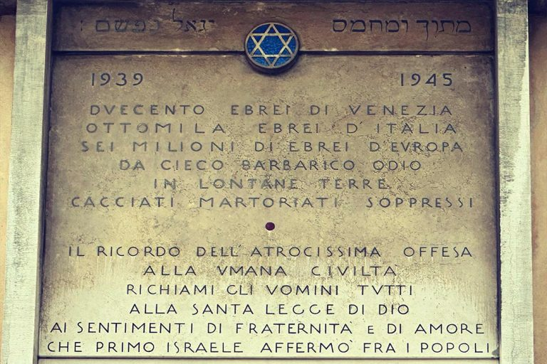
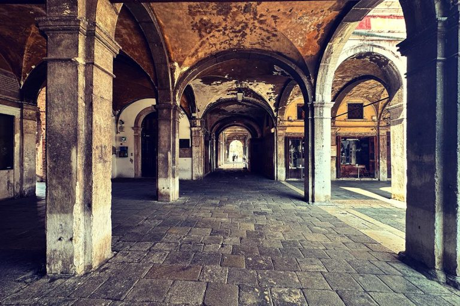
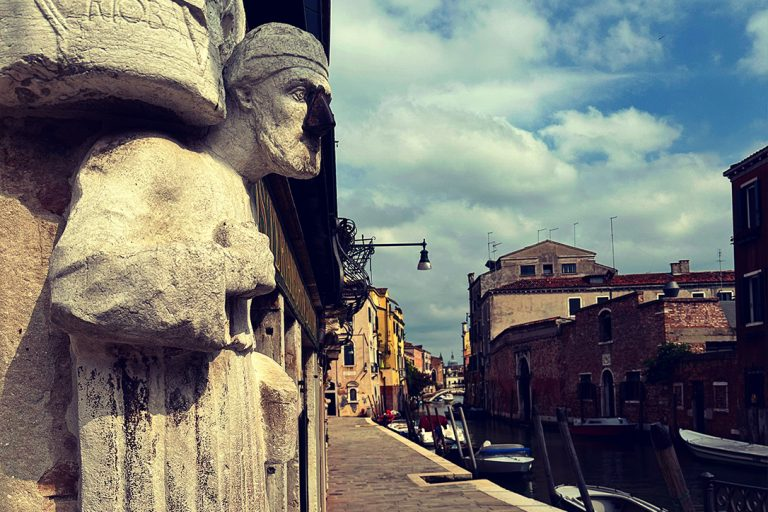

Itaka Tours · Venecia
Nuestros Tours
Experiencias únicas guiadas en español. Elige tu próxima aventura por la Serenísima.
Itaka Tours · Venecia
Experiencias únicas guiadas en español. Elige tu próxima aventura por la Serenísima.
Todos nuestros tours son guiados en español por expertos apasionados. Haz clic en "Reserva tu plaza" para confirmar tu reserva.

GratisEl corazón de la Serenísima. Descubre los secretos de la Basílica, el Palacio Ducal y la plaza más fascinante del mundo con un guía experto en español.

GratisEscapa al ritmo de las islas. El vidrio soplado artesanal de Murano y las casas de colores inigualables de Burano te esperan en una jornada única.

15 €El barrio judío más antiguo de Europa. Historia, cultura y arquitectura en el corazón de Cannaregio: una historia de resistencia y convivencia que no te puedes perder.

El lado más oscuro y fascinante de la Venecia medieval. Una ruta por los personajes que dieron vida y vicio a la República más poderosa del Mediterráneo.

Venecia de noche no es lo que parece. Entre callejuelas y canales oscuros, descubre los secretos mejor guardados de la ciudad más misteriosa del mundo.